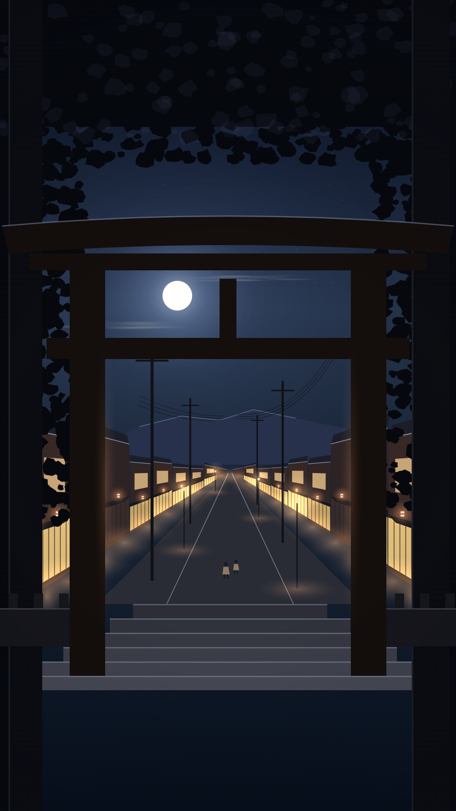
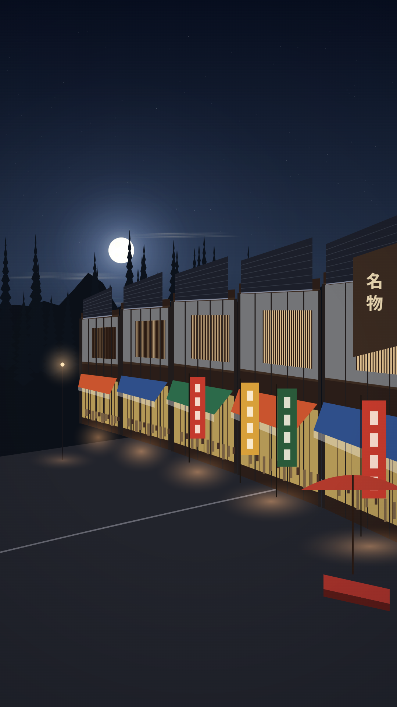
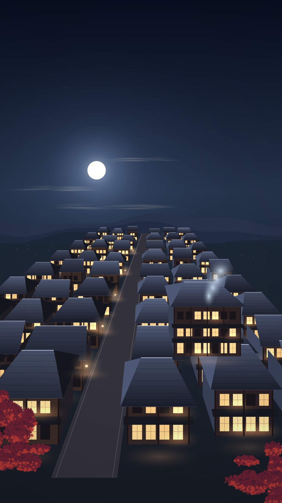
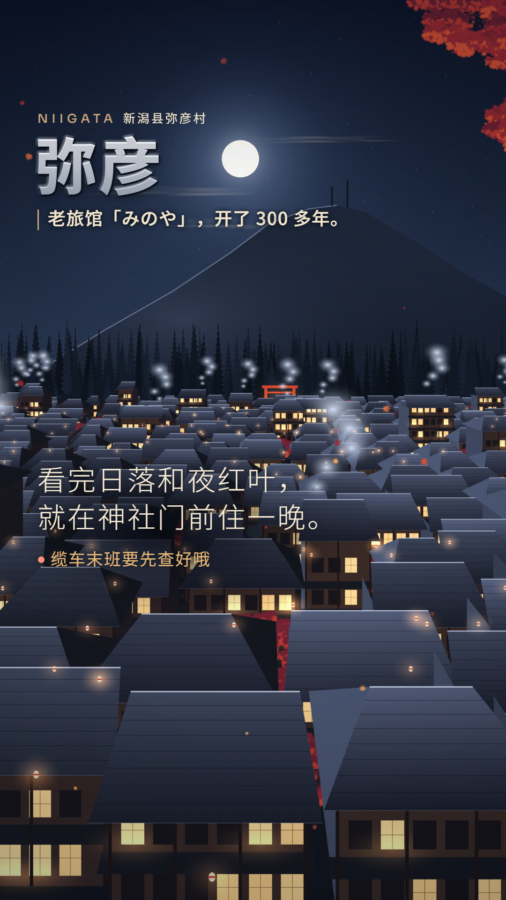

A / 鸟居之外
首选方向暗的杉林与鸟居框住亮的小镇，石阶把视线引向远处。最贴合你选的摄影视角，也最像“参拜后走进小镇”。
拟定运镜：沿台阶轻推；需要进一步细画店铺与鸟居木构。
基于当前 v24 · 三个独立构图方向 · 点击图片看大图

暗的杉林与鸟居框住亮的小镇，石阶把视线引向远处。最贴合你选的摄影视角，也最像“参拜后走进小镇”。
拟定运镜：沿台阶轻推；需要进一步细画店铺与鸟居木构。

店铺斜着延伸，靠屋檐、格栅、遮阳棚与暖灯讲小镇。近景最具体，但现有片尾字会叠在店面上。
拟定运镜：顺店面横移；细化时减少重复立面，突出一间旅馆入口。

比原来的全景更靠近屋顶，以一条街串起灯火，近处旅馆作为落点。能一眼读出“今晚住在这里”。
拟定运镜：低空轻推；建筑是布局示意，不对应某家真实旅馆。

现有字幕原文、字体与位置未改；上方按钮可检查它们与三个构图的关系。